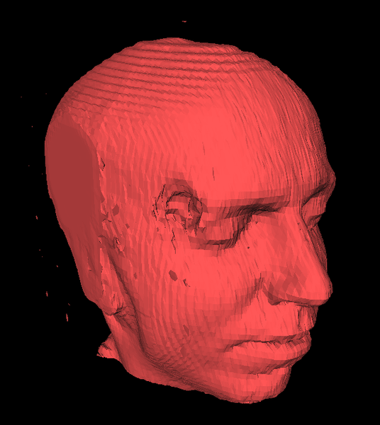
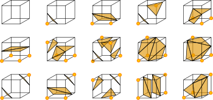

Introduction
Marching cubes is a computer graphics algorithm, published in the 1987 SIGGRAPH proceedings by Lorensen and Cline, for extracting a polygonal mesh of an isosurface from a three-dimensional discrete scalar field (sometimes called voxels). This paper is one of the most cited papers in the computer graphics field. The applications of this algorithm are mainly concerned with medical visualizations such as CT and MRI scan data images, and special effects or 3-D modelling with what is usually called metaballs or other metasurfaces. An analogous two-dimensional method is called the marching squares algorithm.

This 3-D polygonal mesh for a structure of was recontructed using the marching cubes algorithm.
The algorithm is implemenetd in the following steps:-
Step 1: A cube is iterated over the whole volume of object while tagging each vertex in each iteration as IN or OUT based on the notion of their "density". Of 8 vertices each vertex can either be inside or outside the surface thus, generating 256 possibilities. Out of these 256 possible cases due to symmetery it reduces down to 15 distinct classes.
 Credit: Wikipedia
Step 2 : Supporting data structures are used to store the intersection points and store in a OFF format file to generate the polygonal mesh. There are 2 ways to find these intersection points:
- Calculating the mid-points of the edges
- Finding the intersection points through Liner Interpolation
In our approach we have used the later method as it gives a better reconstruction then the former.
Also while calculating the intersection points we have taken the advantage of not repeatedly calculating the intersection points amongst the common edges of the adjacent cubes in subsequent iterations, instead reproducing the results from the prvious one.